CanvaCanva
מעצבים הכל, בלי מעצב
מצגת, פוסט, תעודה וסרטון. ועכשיו גם עוזר AI שמעצב איתכם בשיחה.
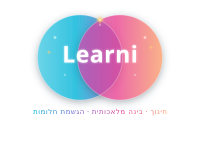
לרני מבית אימפקט.OS · הדרכה לצוותיםכותרתכל העיצובים במקום אחד
גם אם אין לכם שום רקע בעיצוב. נכנסים מהדפדפן או מהטלפון.
תבניות לכל דבר
יותר ממיליון תבניות: מצגות, פוסטים, תעודות, דוחות וסרטונים. בוחרים ומחליפים את התוכן.
AI שמעצב איתכם
מבקשים במילים או בקול, ו-Canva AI בונה טיוטה. כל אלמנט בה נשאר ניתן לעריכה.
עובדים יחד
כמה אנשים על אותו עיצוב בזמן אמת, גם בחשבון החינמי. כמו מסמך משותף, רק לעיצוב.
יש תוכנית חינמית אמיתית. למורים ולתלמידים, וגם לעמותות זכאיות, כל הכלים בתשלום פתוחים בחינם.
כותרתאיך מתחילים
שלושה צעדים, בלי כרטיס אשראי.
נכנסים ל-canva.com
נרשמים עם חשבון Google. מורים נכנסים דרך canva.com/education, ועם מייל בית ספרי מאומת הגישה מיידית.
עוברים לממשק באנגלית
רק כך Canva AI זמין. העברית בעיצובים לא נפגעת. איך עושים את זה? בשקף הבא.
בוחרים תבנית, או מבקשים מה-AI
מחפשים "מצגת", "תעודה" או "פוסט", או כותבים ל-Canva AI מה צריך.
הממשק מתורגם לעברית, ועובדים גם מהטלפון ומהטאבלט. מ-2026 יש גם מצב עבודה בלי אינטרנט.
עוברים לממשק באנגלית
חצי דקה, פעם אחת. אחר כך Canva AI זמין, וכל הגופנים העבריים נשארים.
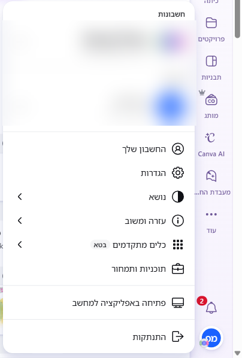
1לוחצים על תמונת הפרופיל בתחתית הפס, ואז על "הגדרות"
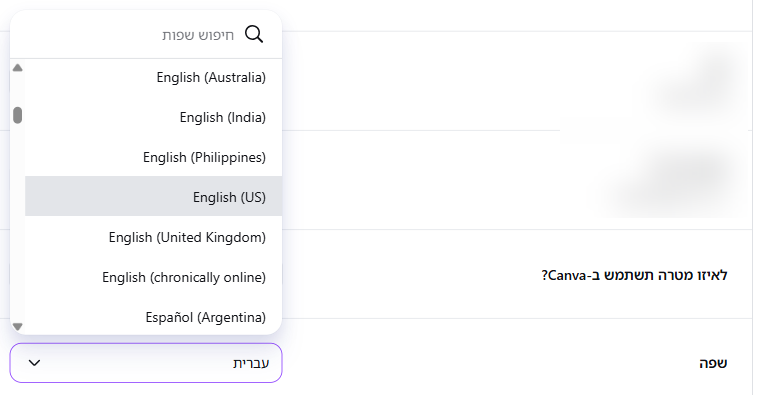
2בשורה "שפה" פותחים את הרשימה ובוחרים English (US)
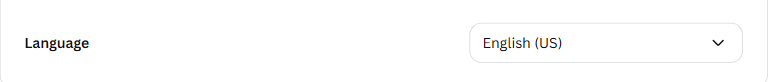
3זהו. הממשק באנגלית ו-Canva AI זמין. רוצים לחזור? אותה דרך, בוחרים עברית.
המסך הראשון אחרי שנכנסים
בממשק באנגלית הפס נמצא בצד שמאל. שני כפתורים מספיקים כדי להתחיל.
- 1
Create
עיצוב חדש מאפס: מצגת, פוסט, דף עבודה או תעודה.
- 2
Canva AI
מבקשים עיצוב במילים, בהקלדה או בקול.
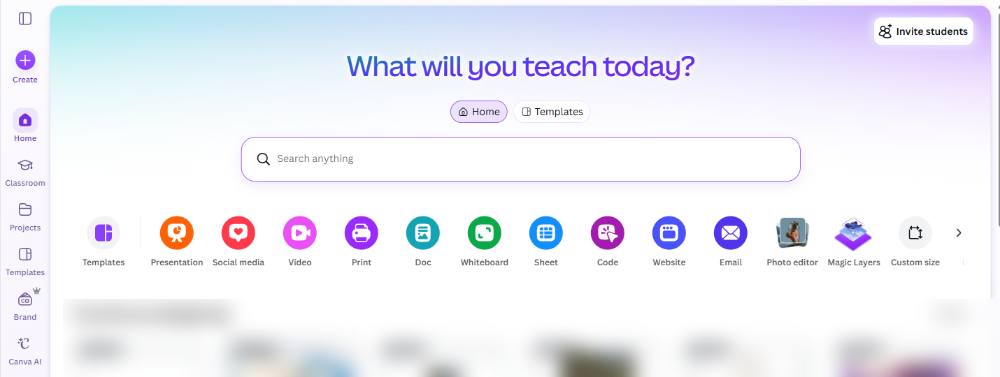
יוצרים עיצוב חדש
לוחצים Create, ונפתח חלון עם כל סוגי העיצובים.
- 1
מחפשים מה צריך
באנגלית, למשל Certificate או Worksheet.
- 2
או בוחרים מהרשימה
למשל Presentation. נפתח עמוד ריק, ובצד תבניות מוכנות.
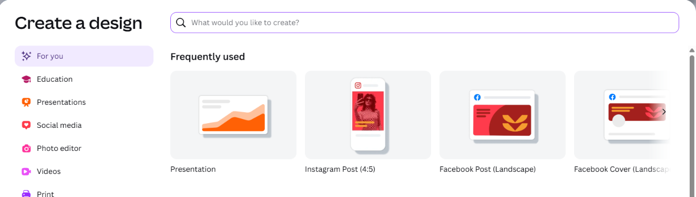
2
איך עובדים עם Canva
מהשיחה עם ה-AI ועד שלושים תוצרים בלחיצה אחת.
מעצבים בשיחה
מבקשים במילים, ומקבלים עיצוב שכל חלק בו נשאר ניתן לעריכה. הגרסה הזו הושקה באפריל 2026.
אפשר גם בקול
מדברים אל Canva AI במקום להקליד.
כל אלמנט נשאר חי
הטיוטה בנויה משכבות. מתקנים כותרת או מחליפים תמונה בלי לייצר הכל מחדש.
זוכר את המותג שלכם
מגדירים לוגו, צבעים וגופנים פעם אחת, וה-AI מחיל אותם לבד על כל עיצוב.
נבדק באוקטובר 2026: Canva AI עובד רק בממשק באנגלית (עמוד 4). הוא עונה גם בעברית, ואת התוצר תמיד מגיהים.
איפה כותבים ל-Canva AI
לוחצים על Canva AI בפס הצד, ונפתח מסך עם השאלה What will we design today?
- 1
כותבים כאן מה רוצים
או מדביקים פרומפט מוכן. ה-+ מצרף קובץ או תמונה.
- 2
או מדברים
המיקרופון מקליט את הבקשה. אחרי שמקלידים, באותו מקום מופיע חץ לשליחה.
- 3
בוחרים סוג תוצר
עיצוב, תמונה, מסמך, קוד, סרטון קצר, ובחשבון חינוך גם פעילות לתלמידים.
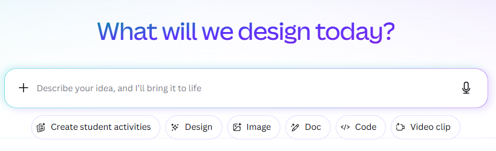
רואים את ההודעה הזו? הממשק עדיין בעברית. חוזרים לעמוד 4 ועוברים לאנגלית.
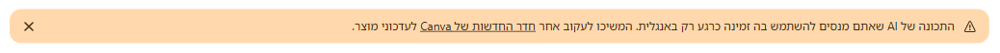
פעילות לתלמידים, מתיאור קצר
בחשבון חינוך יש ב-Canva AI כפתור שבונה משחק, חידון או דף עבודה לפי כיתה ומקצוע.
- 1
לוחצים Create student activities
מתחת לתיבת הכתיבה של Canva AI.
- 2
בוחרים כיתה, מקצוע ומטרה
Grade, Subject ו-Learning purpose.
- 3
מתארים את הנושא
במשפט אחד. את התוצר שולחים לתלמידים או מפעילים בשיעור, והתשובות חוזרות למורה.
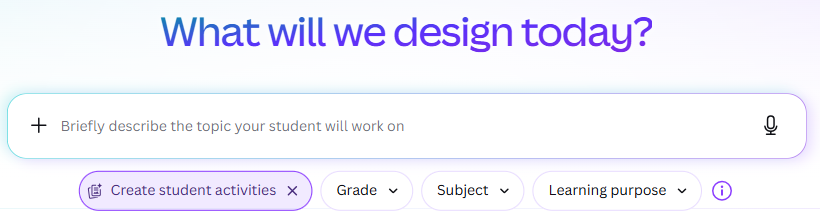
חדש מאוקטובר 2026: חשבונות תלמידים בלי מייל. המורה מקלידה שמות, ו-Canva יוצרת לכל תלמיד שם משתמש וסיסמה. ובמאגר Learn Grid יש אלפי פעילויות מוכנות, אבל בלי תוכנית לימודים ישראלית, ולכן בודקים כל פעילות לפני שמשתמשים בה.
Canva AI קורא מהמערכות שלכם
מחברים את Gmail, Google Drive, Zoom, היומן או Notion, ו-Canva AI משתמש בתוכן שלהם כחומר גלם.
- 1
לוחצים על ה-+
בתיבת הכתיבה של Canva AI.
- 2
Connect
בוחרים שירות ומאשרים חיבור. אפשר עד חמישה.
- 3
מבקשים במילים
"סכם את ישיבת הזום של אתמול לדף מעוצב לצוות", או "הפוך את המיילים מההורים השבוע לרשימת נושאים".
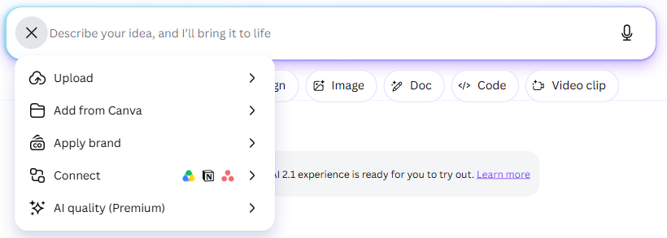
Canva רק קוראת מהשירותים המחוברים, ולא משנה בהם כלום. עוד שני חידושים בקצרה: תזמון, בחץ שליד כפתור השליחה, מריץ בקשה לבד מחר או כל שבוע (בתשלום). זיכרון: העוזר לומד את הסגנון שלכם, ומכבים אותו בהגדרות, תחת AI personalization.
ההנחיה שנותנת תוצאה טובה
פרומפט הוא ההוראה שכותבים ל-AI. לוחצים "העתקה", ומדביקים בתיבה של Canva AI (Ctrl+V).
מה
מצגת, 8 שקפים
למי ולמה
הצגת תוכנית העבודה
סגנון
חם, מעט טקסט, מסר אחד לשקף
שפה
הנחיה באנגלית, תוצר בעברית
מעצבים בעברית, נכון
עברית עובדת מצוין ביום-יום. צריך להכיר שלושה דברים.
בוחרים תבנית
התבניות החינמיות פתוחות לכולם. סימן כתר על אלמנט מסמן שהוא בתשלום.
מחליפים לגופן עברי
בממשק באנגלית הם לא מופיעים ברשימה הראשונה, אבל הם שם. מחפשים אותם, כמו בשקף הבא.
הופכים את הפריסה
רוב התבניות בנויות משמאל לימין. הופכים אלמנטים עם Flip, מסדרים מחדש ובודקים בעין. טקסט לא מתהפך.
הכלי Translate מתרגם עיצוב שלם לשפה אחרת. נוח כשמכינים גרסה בעברית וגרסה בערבית או באנגלית.
מוצאים גופן עברי
בוחרים תיבת טקסט, ואז שלוש לחיצות.
- 1
לוחצים על שם הגופן
בסרגל שמעל העמוד. נפתחת חלונית הגופנים.
- 2
מקלידים Hebrew
או שם של גופן, למשל Heebo או Frank Ruhl Libre.
- 3
בוחרים מהרשימה
כתר ליד גופן מסמן שהוא בתשלום. Heebo, Alef ו-Noto Sans Hebrew חינמיים.
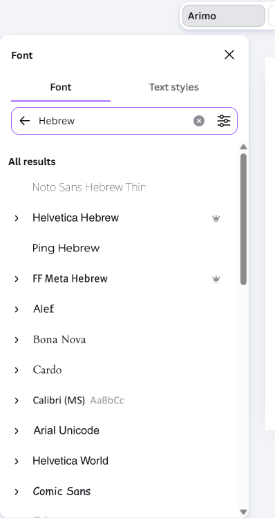
מטבלה אחת, 30 עיצובים
Canva Sheets ו-Bulk Create: תבנית אחת, וכל שורה בטבלה הופכת לתוצר מותאם אישית.
מכינים טבלה
עמודת שמות, עמודת כיתה או תפקיד. אפשר להדביק מאקסל או מ-Google Sheets.
מחברים שדות לתבנית
מסמנים איפה בעיצוב יופיע השם ואיפה התפקיד.
לוחצים Bulk Create
עשרות תעודות, תגי שם או ברכות, כל אחת עם השם הנכון.
Bulk Create נמצא בתוכניות בתשלום, ופתוח בחינם בחשבון Education. עובד מצוין גם בעברית.
חידון או מחשבון, בלי לתכנת
מתארים במילים מה רוצים, ו-Canva Code בונה דף אינטראקטיבי שאפשר לשתף בקישור.
כותבים מה רוצים
"בנו חידון של 5 שאלות", במילים שלכם.
מקבלים תוך שניות
דף שעובד, ואפשר להמשיך לשפר בשיחה.
משתפים בקישור
שולחים לכיתה, לצוות או להורים.
אותו כלי משמש גם לצוות: טופס הרשמה, מחשבון שעות או דף הסבר לנוהל. וחדש: אפשר לייבא קוד HTML שנבנה בכלי AI אחר, ולערוך אותו ב-Canva כמו עיצוב.
תמונה וסרטון, בלי תוכנה נוספת
כלי ה-AI לעריכה, שפעם נקראו Magic Studio, נמצאים היום ישירות בתוך Canva AI.
הסרת רקע
לחיצה אחת והרקע נעלם. בתוכניות בתשלום.
Magic Resize
עיצוב אחד הופך לפוסט, סטורי ובאנר. בתשלום.
יצירת תמונות
מתארים במילים ומקבלים תמונה. ותמונה קטנה מגדילים פי 4 או פי 16 בלי לאבד איכות.
וידאו
Video clip יוצר סרטון קצר מתיאור. Magic Video מחבר תמונות וקטעים לסרטון של דקה, חינם לכולם.
שימו לב למכסה: מספטמבר 2026 החשבון החינמי כולל רק כ-20 שימושים בכלי AI בחודש. בתוכניות בתשלום השימוש הרגיל כמעט לא מוגבל, והכלים המתקדמים עדיין במכסה.
Canva בתוך הצ'אט שאתם כבר מכירים
ChatGPT, Claude ו-Gemini מתחברים היום ל-Canva. יש שתי דרכים לעבוד איתם.
הצ'אט כותב, Canva מעצב
מבקשים מהצ'אט ראשי פרקים למצגת, טבלת שמות או פרומפט מפורט, ומדביקים ב-Canva. עובד עם כל צ'אט, בלי חיבור.
מעצבים ישר מהצ'אט
מחברים את Canva פעם אחת, ואז מבקשים עיצוב בתוך השיחה. ב-ChatGPT כותבים @Canva, וב-Claude מוסיפים את Canva בהגדרות תחת Connectors.
את הליטוש הסופי עושים ב-Canva: גופן עברי, היפוך פריסה והגהה. החיבור חוסך את שלב הטיוטה, לא את שלב הבדיקה.
3
מתי כן, ומתי לא
בלי הבטחות: מה מעולה, מה מוגבל, ומה עושים עם זה.
מה מעולה, ומה כדאי לדעת מראש
מתי כן
- צריך תוצר מעוצב מהר, בלי מעצב
- כמה אנשים עובדים על אותו עיצוב
- מפיקים בכמויות: תעודות, תגים, ברכות
- אתם מורים או עמותה, ואז הכל חינם
- רוצים עיצוב, וידאו, אתר והדפסה במקום אחד
מתי לא, ומה עושים
- Canva AI עובד רק בממשק באנגליתעוברים פעם אחת, והגופנים העבריים נשארים
- רוב התבניות בנויות משמאל לימיןהופכים פריסה ובודקים בעין
- בחשבון החינמי מכסת ה-AI קטנהשומרים אותה למה שחשוב באמת
- "הלוק של קאנבה": נראה כמו של כולםערכת מותג עם גופן וצבעים משלכם
כמה זה עולה
בדולרים, נכון לאוקטובר 2026. באתר בישראל תראו את המחיר בשקלים.
Free
מיליון תבניות, 5GB אחסון, עבודה משותפת, ובערך 20 שימושים ב-AI בחודש.
Pro ליחיד
הסרת רקע, Magic Resize, נכסי פרימיום, גופנים משלכם ושימוש רגיל ב-AI כמעט בלי הגבלה.
Business
לצוותים: ערכות מותג משותפות וניהול הרשאות. תוכנית Teams הישנה נסגרה למצטרפים חדשים.
Education ועמותות
חינם למורים ולתלמידים בבתי ספר, ולעמותות זכאיות. כולל כלי ה-Pro.
המחירים והמכסות משתנים לעתים קרובות, ויש מבצעים אזוריים. לפני החלטה בודקים ב-canva.com/pricing.
Canva או PowerPoint?
לא צריך לבחור. הרבה צוותים מעצבים ב-Canva ומייצאים ל-PPTX כשצריך.
Canva
- עובד בדפדפן מכל מכשיר, עם ממשק בעברית
- עבודה משותפת בזמן אמת, גם בחינם
- מיליון תבניות ו-AI שמעצב בשיחה
- הרבה מעבר למצגות: פוסטים, וידאו, אתרים, הדפסה
PowerPoint
- מוכר ומותקן כמעט בכל בית ספר וארגון
- שליטה מדויקת באנימציות ובמעברים
- הקבצים נשמרים אצלכם
- כבר כלול ב-Office שהארגון משלם עליו
רגע, זה בדיוק אני
שלושה מצבים שכולנו מכירים, ואיך פותרים אותם בכמה דקות.
מחר ישיבת הנהלה
יש רק טבלת נתונים יבשה. Magic Charts הופך אותה לגרפים, ותבנית דוח עוטפת הכל במצגת מכובדת.
בערך 15 דקות
הודעה להורים יוצאת היום
מעצבים פעם אחת, ו-Magic Resize מתאים את העיצוב לוואטסאפ, לפייסבוק ולדף מודפס.
בערך 5 דקות
30 תעודות עד חמישי
טבלת שמות ו-Bulk Create, וכל תעודה יוצאת עם השם הנכון. חינם בחשבון Education.
בערך 3 דקות
למי זה מתאים
לכל מי שמכין משהו שאנשים אחרים יראו.
הוראה
ניהול כיתה והקצאת משימות בחשבון Education, דפי עבודה, תעודות לכל הכיתה, וחידון ב-Canva Code. Learn Grid מוסיף פעילויות מוכנות.
ניהול
דוחות הנהלה עם גרפים, ערכת מותג נעולה כך שכל הצוות מפיק מסמכים אחידים, ולוח לבן לתכנון שנתי.
מזכירות וצוות
הודעות להורים, הזמנות לאירועים, תגי שם לכנס ושלטים להדפסה, כולם מתבנית אחת.
שימוש אישי
הזמנה ליום הולדת, אלבום משפחתי, קורות חיים מעוצבים או פוסט לקהילה.
ככה זה נראה באמת
תוצרים שנוצרו בחשבון ה-Canva שלנו, בלי מעצב גרפי. לוחצים כדי להגדיל.
חמישה טיפים שלא כתובים במדריכים
ממשק באנגלית
ככה Canva AI זמין. מעבירים פעם אחת בהגדרות.
מתחילים מתבנית
ואז מחליפים גופן, צבעים ותמונות, כדי שהתוצר ייראה שלכם.
מחפשים Hebrew
בחלונית הגופנים מקלידים Hebrew ומקבלים את הגופנים העבריים.
בודקים זכאות לפני שמשלמים
מורים ועמותות מקבלים הכל בחינם.
ערכת מותג קודם
מגדירים פעם אחת לוגו, צבעים וגופנים, ומאז כל תוצר יוצא אחיד.
מורידים כ-PDF להדפסה
PDF Print שומר על איכות. PNG מתאים לוואטסאפ ולרשתות.
שאלות שכולם שואלים
לוחצים על שאלה כדי לפתוח את התשובה.
זה באמת חינמי?
כן. יש תוכנית חינמית עם מיליון תבניות ו-5GB אחסון. למורים, לתלמידים ולעמותות זכאיות גם כלי ה-Pro פתוחים בחינם.
זה עובד בעברית?
כן. עובדים בממשק באנגלית, ככה Canva AI זמין, ואת הגופנים העבריים מוצאים בחיפוש Hebrew. העוזר עונה גם בעברית, ואת התוצר מגיהים.
צריך כרטיס אשראי?
לא. נרשמים עם חשבון Google ומתחילים. משלמים רק אם בוחרים לשדרג.
מכסת ה-AI נגמרה. מה עכשיו?
המכסה מתחדשת כל חודש, וכל השאר ממשיך לעבוד: תבניות, עריכה ושיתוף. מי שמשתמש הרבה ב-AI ישקול Pro או Education.
אפשר לעבוד עם תלמידים?
כן. בחשבון Education יש ניהול כיתה, הקצאת משימות, חיבור ל-Google Classroom ושליטה של המורה בכלי ה-AI.
זה מחליף את PowerPoint?
לא חייב. מעצבים ב-Canva ומייצאים ל-PPTX כשצריך. כל כלי חזק במשהו אחר.
בדקו את עצמכם
שלוש שאלות. נסו לענות בקול לפני שפותחים.
איך מוצאים גופן עברי בממשק באנגלית?
לוחצים על שם הגופן בסרגל העליון ומקלידים Hebrew, או שם של גופן כמו Heebo.
איך מפיקים 30 תעודות שונות מטבלה אחת?
מכינים טבלת שמות, מחברים את השדות לתבנית, ולוחצים Bulk Create.
מה ההבדל בין שתי הדרכים לעבוד עם צ'אט AI?
בדרך הראשונה הצ'אט כותב תוכן ואתם מדביקים ב-Canva. בשנייה מחברים את Canva לצ'אט ומבקשים עיצוב ישר בשיחה.
4
עכשיו אתם
לא צופים, עושים. פותחים מחשב או טלפון.
תוצר מעוצב ראשון, ב-5 דקות
פותחים חשבון חינמי
ב-canva.com. מורים דרך canva.com/education.
עוברים לממשק באנגלית
תמונת הפרופיל, "הגדרות", ובשורה "שפה" בוחרים English.
מחפשים תבנית "תעודה" או "הזמנה"
ובוחרים אחת שאתם אוהבים.
מחליפים טקסט וגופן
התוכן שלכם, בגופן עברי.
מורידים או משתפים
PNG לוואטסאפ, או קישור לשיתוף.
בסוף חמש הדקות יש לכל אחד תוצר מעוצב בעברית, מוכן לשליחה.
שלושה דברים לזכור
מתבנית, לא מדף ריק
ואז הופכים אותה לשלכם: גופן, צבעים, ערכת מותג.
ממשק באנגלית, עיצוב בעברית
הממשק באנגלית בשביל Canva AI, הגופן העברי מהחיפוש, ותמיד מגיהים.
בודקים מה מגיע לכם בחינם
מורים ועמותות מקבלים הכל. ולכולם יש תוכנית חינמית אמיתית.
נסו עוד היום
פתחו חשבון, הכינו תוצר אחד, ושלחו אותו למישהו מהצוות.
פותחים חשבון היום
ב-canva.com, ומורים דרך canva.com/education.
אתגר של 5 דקות
תבנית, גופן עברי, הטקסט שלכם. רוצים משוב? שלחו לנו.